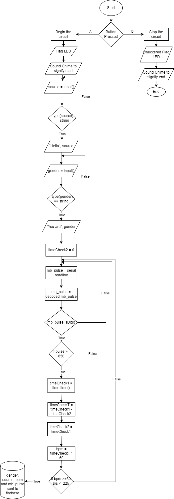

This project will function much like a heart rate sensor built into the fitness watches on the market today. Using a pulse sensor, the system would monitor the users heart rate through the duration of their workout. This heart rate would be averaged out in order to calculate the average beats per minute. This data will be stored and sent to firebase in order to graphically format and advise the user. Using the data gathered, I will then answer my 'What-If' questions.
I will use agile to develop this project as it takes form as stages of development. I decided to incorporate features of Universal Design such as, 'Perceptible Information', 'Simple and Intuitive Use' and 'Low Physical Effort'.
The system will be activated initially by the user by pressing the B button on the microbit, which will start the heart rate sensor, while also giving an audio and visual LED cue. The data that will be constantly read by the pulse sensor will be stored on the microbit with and attributed time stamp to allow for easier graphing of the results. Upon completion of the exercise the user will press the A button on the microbit to end the workout and send the data to firebase. This data can then be compiled and presented in a graphical format to inform the user and give them insights into their health.
The analogue input of my project will be the heart rate of the user with the digital input being the button presses to start and end the recordings. Analogue outputs wil take from as audio cues.
The design will try to be as portable as possible while also containing all of my components, which proved to be a challenge, however the design developed as I began to extract the key details and focus on them. This allowed me to create a design that could be used in a fitness setting.
My two 'What-if' questions that I will aim to answer will be “What if the user wanted to take a break from exercise?” and “What if the user wished to be given an estimated rest time?”. These questions are aimed to be realistic and achievable for my project and simulate a real-life scenario.
The main code of my project will be created in Python and JavaScript, with the presentation of my brief being created in HTML and designed with CSS. The data will be sent to Google Firebase to cleanly store the data for further use.
Below is a flowchart of the main python code used meet the basic requirements: 
Below is an architecture diagram of my system: